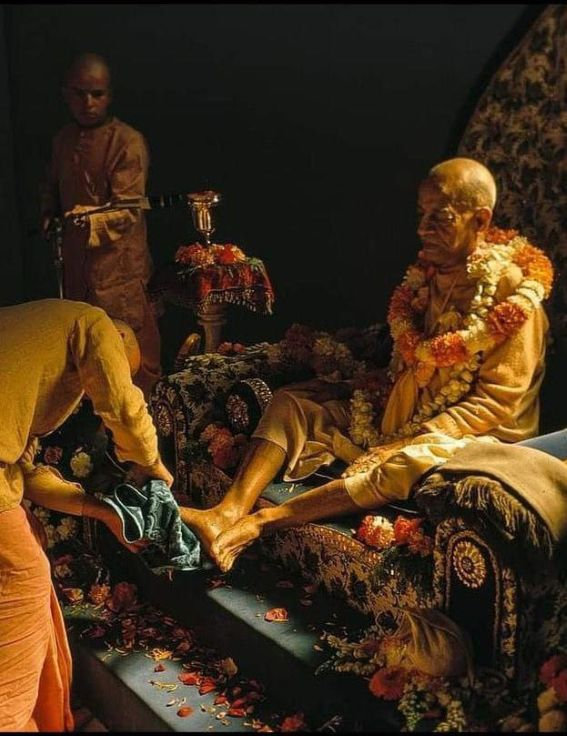

Srīla Prabhupāda you are lord of my life, you are my Lord.

Srīla Prabhupāda you are lord of my life, you are my Lord. Jānāmi na tvām vinā I don't know anyone but you. Sri Vrajanātha Krsna is also yours Krsna se tomār if I will ever attain his lotus feets it's only through you, because you are Krsna-preshta, Mukunda-preshta, krsna kripa Sri Murti. You are the one who has given krsna to everyone, you are the one who will give krsna to everyone, you have that power you have that authority you have bound Krsna in your prema-pash tight rope of love. You are His Divine Grace, you are Prabhupāda under whose lotus feet all saints and devotees are present, and he who is always found under lotus feet of Sri Krsna. Still I wonder why people approach Krsna independently without your guidance?
~Admin